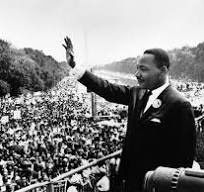

Martin Luther king
Augest 28th, 1963
Lincion Memorial, Washington DC
Five score years ago, a great American, in whose symbolic shadow we stand today, signed the Emancipation Proclamation. This momentous decree came as a great beacon light of hope to millions of Negro slaves who had been seared in the flames of withering injustice. It came as a joyous daybreak to end the long night of their captivity.
I say to you today, my friends, so even though we face the difficulties of today and tomorrow, I still have a dream. It is a dream deeply rooted in the American dream.
I have a dream that one day this nation will rise up and live out the true meaning of its creed: “We hold these truths to be self-evident, that all men are created equal.”
I have a dream that one day on the red hills of Georgia, the sons of former slaves and the sons of former slave owners will be able to sit down together at the table of brotherhood.
I have a dream that one day even the state of Mississippi, a state sweltering with the heat of injustice, sweltering with the heat of oppression, will be transformed into an oasis of freedom and justice.
I have a dream that my four little children will one day live in a nation where they will not be judged by the color of their skin but by the content of their character. I have a dream today. For each parag
I have a dream that one day down in Alabama, with its vicious racists, . . . one day right there in Alabama little black boys and black girls will be able to join hands with little white boys and white girls as sisters and brothers. I have a dream today.
I have a dream that one day every valley shall be exalted, every hill and mountain shall be made low, the rough places will be made plain, and the crooked places will be made straight, and the glory of the Lord shall be revealed, and all flesh shall see it together.
This is our hope. . . With this faith we will be able to hew out of the mountain of despair a stone of hope. With this faith we will be able to transform the jangling discords of our nation into a beautiful symphony of brotherhood. With this faith we will be able to work together, to pray together, to struggle together, to go to jail together, to stand up for freedom together, knowing that we will be free one day. . . .
And when this happens, and when we allow freedom ring, when we let it ring from every village and every hamlet, from every state and every city, we will be able to speed up that day when all of God’s children, black men and white men, Jews and Gentiles, Protestants and Catholics, will be able to join hands and sing in the words of the old Negro spiritual: “Free at last! Free at last! Thank God Almighty, we are free at last!”